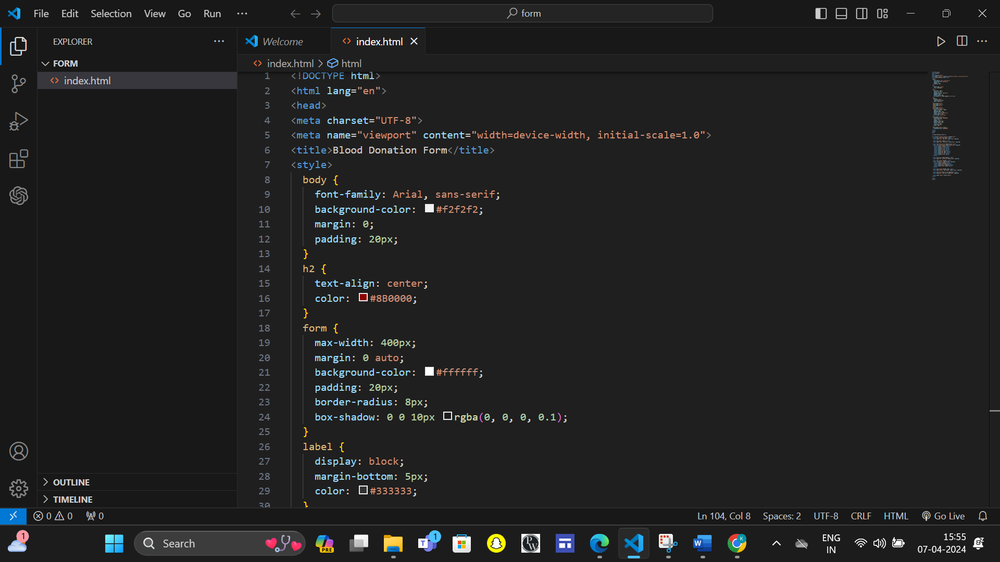
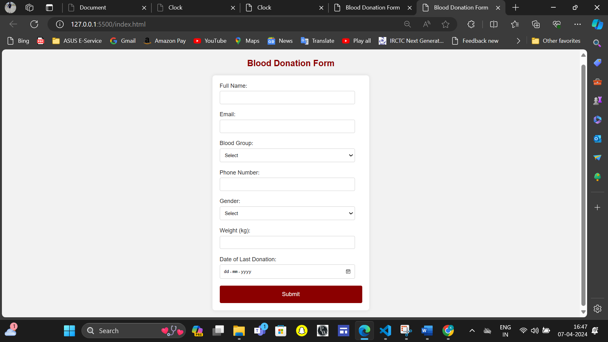
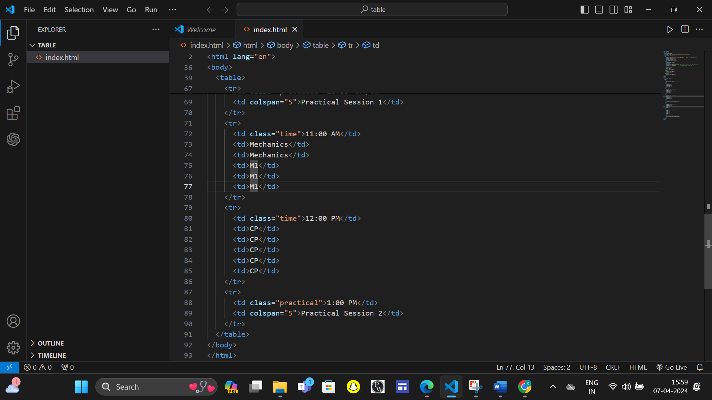
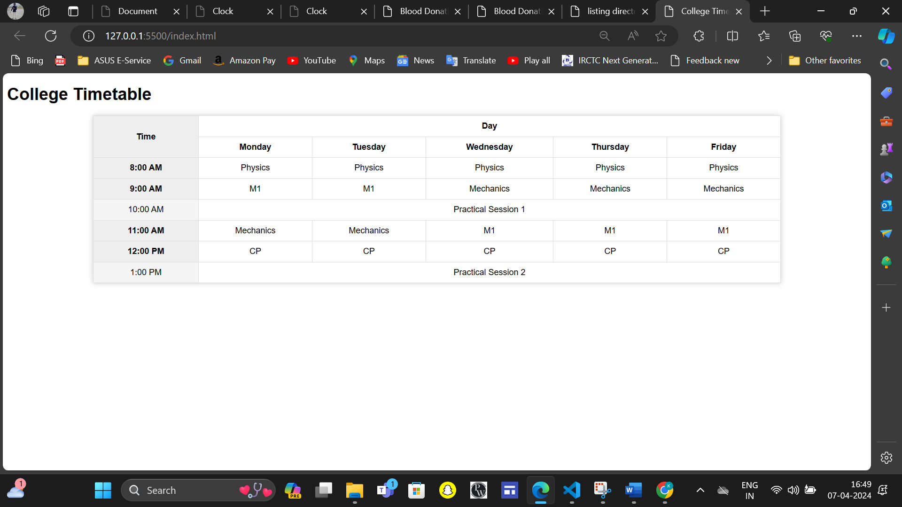
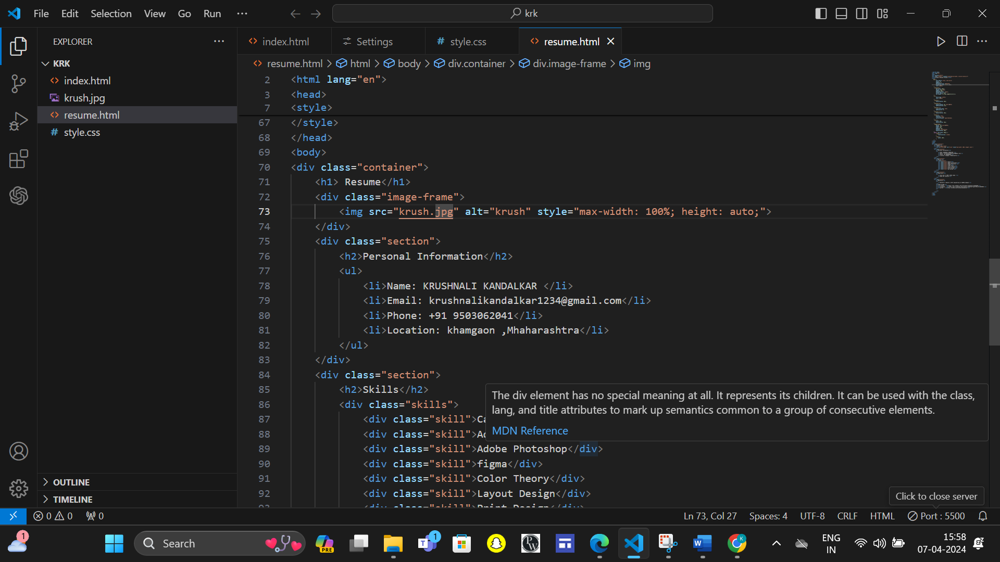
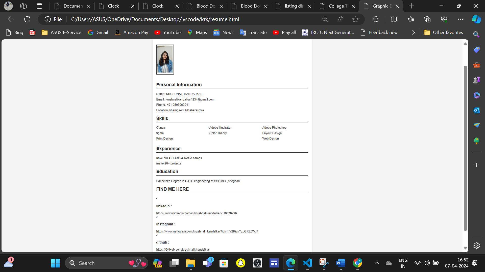

Unlocking the Essentials
1. HTML, CSS, JavaScript, and GitHub Mastery
- Dive deep into the building blocks of the web.
- Craft stunning websites with HTML & CSS.
- Bring interactivity to life with JavaScript.
- Collaborate seamlessly using GitHub
1. Git Tutorial Mastery:
- Objective: Enhance Version Control Skills
- Description: Complete a comprehensive Git tutorial to elevate your understanding of version
control systems. Harness the power of Git to streamline collaboration, track changes, and manage
project versions effectively.
2. Personal Portfolio Creation:
- Objective: Showcase Your Work and Introduce Yourself
- Description: Craft a captivating personal portfolio site within the class archive. Showcase
your best projects, highlight your skills and achievements, and create a compelling introduction
to who you are as a designer or developer. Make your portfolio site a true reflection of your
creativity and expertise.
"Web Page Languages: A Quick Introduction"
Web page languages are vital for dynamic websites. Each serves a unique purpose. Here's a snapshot:
1. HTML (Skeleton): Defines the structure.
2.CSS (Style): Adds aesthetics.
3. JavaScript (Functionality): Provides interactivity. Just like the body's skeleton, muscles, and
nerves work together, these languages collaborate to bring websites to life.
Text editors are essential tools for web development because they provide a streamlined environment
for writing and editing code with features like syntax highlighting, code completion and plugin
support. Popular text editors include Sublime Text, Visual Studio Code, and Atom.
Why I chose VS code?
Visual Studio Code (VS Code) is favoured for web development due to its robust features, fast
performance, cross-platform support, extensive customization options, and vibrant ecosystem, making
it a top choice among developers.
The inaugural module was a deep dive into web development essentials. We explored the trifecta
of HTML, CSS, and JS, laying the groundwork for crafting captivating digital experience.
What is HTML?
HTML (HyperText Markup Language) was created by Tim Berners-Lee in 1991 as a standard for
creating web pages. It's a markup language used to structure content on the web, defining
elements like headings, paragraphs, links, and images. HTML forms the backbone of web content.
In layman's terms, HTML is like the skeleton of a website. It's a set of instructions that tells
a web browser how to display text, images, videos, and other elements on a webpage. Think of it
as the building blocks that create the structure and look of a website, similar to how bricks
and mortar are used to build a house.
In a nutshell:
HTML is the language of the web, used to create websites.
HTML defines the barebone structure or layout of web pages that we see on the Internet.
HTML consists of a set of tags contained within an HTML document, and the associated files
typically have either a ".html" or ".html" extension.
There are several versions of HTML, with HTML5 being the most recent version.
(Assignment no.1)
Build the form using form tag etc.


(Assignment no.2)
Build your own class time table using table tags etc.


"HTML Dive & CSS " is a metaphorical expression used to describe the process of learning and
mastering HTML and CSS, the two fundamental languages of web development.
- HTML Dive: This refers to delving deeply into HTML (Hypertext Markup Language), which is the standard
markup language for creating web pages. HTML provides the structure and content of a web page, defining
elements such as headings, paragraphs, images, links, and more.
- CSS : CSS (Cascading Style Sheets) is used to style and format HTML elements, enhancing the visual
presentation of a web page. A CSS "kickstart" implies getting started or initiating the process of
learning CSS, which involves understanding selectors, properties, values, and how to apply styles to
different elements.
together, mastering HTML and CSS forms the foundation of web design and development, enabling
individuals to create visually appealing and well-structured websites.
(Assignment no.3)
Style the buttons using hover, gradient, all font properties, and in creative way.


Advanced CSS encompasses a range of techniques and concepts that go beyond basic styling. It includes
topics like Flexbox and Grid layout for advanced page structuring, media queries for responsive design,
CSS animations and transitions for adding interactivity, CSS preprocessors like Sass for enhanced code
organization, and CSS variables for dynamic styling. Additionally, it covers topics like vendor prefixes
for cross-browser compatibility and performance optimization techniques. Mastering advanced CSS empowers
developers to create more complex and visually appealing web experiences.
(Assignment no.4)
1)Try to create a static web page displaying current time and date on clicking on the button. Also try
to add World Clock on the same website.
2)Make it creative and attractive using gradient, hover, background images, etc.
3) Try to explore more about Java script.
JavaScript is a versatile programming language primarily used for adding interactivity and dynamic
functionality to websites. It runs on the client side, meaning it executes in the user's web browser,
enabling actions such as form validation, animations, and updating content without reloading the page.
JavaScript is also used on the server side with platforms like Node.js. It's essential for modern web
development and is supported by all major browsers, making it a fundamental skill for front-end and
full-stack developers.
(Assignment no.5)
1)Try to create a static web page displaying current time and date on clicking on the button. Also try to add World Clock on the same website.
2)Make it creative and attractive using gradient, hover, background images, etc.
3) Try to explore more about Javascript.
Git is a distributed version control system used for tracking changes in source code during software
development. It allows multiple developers to collaborate on projects simultaneously, facilitating
seamless code integration and management. Git tracks changes to files, enabling developers to revert to
previous versions, compare changes, and merge code branches efficiently.
GitHub, on the other hand, is a web-based hosting service for Git repositories. It provides a platform
for developers to store, share, and collaborate on projects using Git. GitHub offers additional features
such as issue tracking, pull requests, code reviews, and project management tools, making it a popular
choice for open-source and collaborative software development.
In summary, Git is the version control system, while GitHub is a hosting service built around Git,
providing a platform for collaborative development and project management.